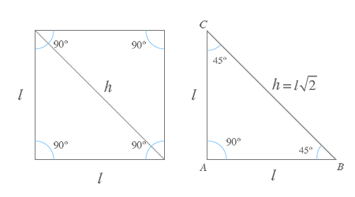
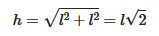
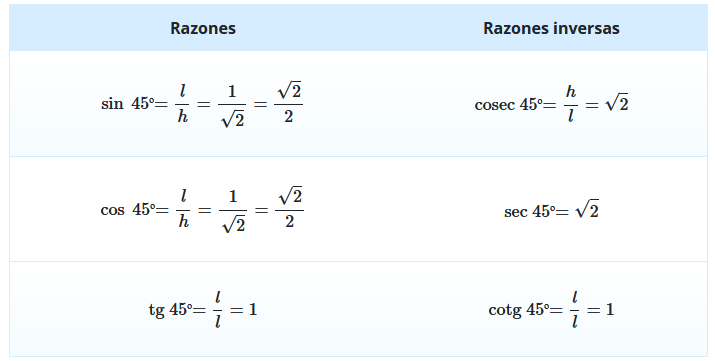

Ángulos notable de 45 grados
Un ángulo notable de 45 grados es aquel que tiene una medida de 45 grados o π/4 radianes.
Para comprender cómo calcular las razones trigonométricas de este ángulo,
imaginemos un cuadrado con un lado de medida "l". Si trazamos la diagonal del cuadrado,
este se divide en dos triángulos idénticos.
Estos triángulos se llaman triángulos isósceles, lo que significa que
tienen dos lados iguales y dos ángulos iguales, ambos de 45 grados.
Además, cada uno de estos triángulos también tiene un ángulo de 90 grados.

Descomposición de un cuadrado
Ahora, al dividir un cuadrado de lado "l" por su diagonal, obtenemos
dos triángulos isósceles idénticos.
¿Por qué es esto importante?
Porque podemos aplicar el teorema de Pitágoras para calcular la medida de
la hipotenusa de estos triángulos, que es la misma que la longitud
de la diagonal del cuadrado.
El teorema de Pitágoras establece que en un triángulo rectángulo,
el cuadrado de la longitud de la hipotenusa es igual a la suma de
los cuadrados de las longitudes de los otros dos lados.
En el caso de nuestros triángulos isósceles, los lados iguales tienen
una longitud de "l", y la hipotenusa (que es la diagonal del cuadrado)
tiene una longitud desconocida que podemos calcular.

Razones trigonométricas de los ángulos de 45º
Una vez que tenemos la longitud de la hipotenusa, podemos utilizar
estas propiedades para calcular las razones trigonométricas específicas
del ángulo de 45 grados, como es el:
seno, coseno, tangente, cotangente, secante y cosecante.
Si aplicamos las definiciones de las distintas razones trigonométricas sobre el anterior triángulo isósceles obtenemos que:
